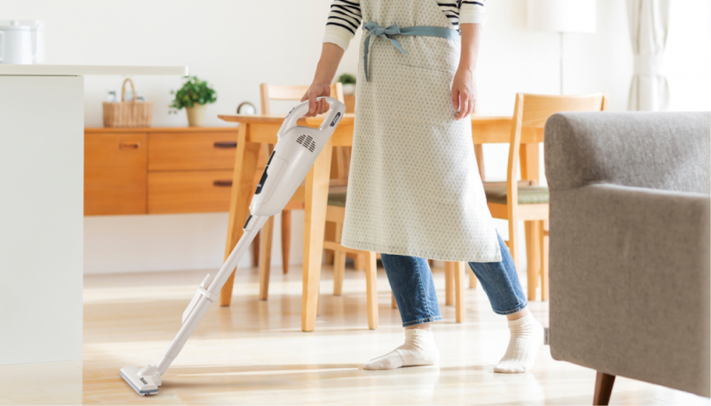

Лайфхаки
Уборка пола
Экологичная уборка играет значительную роль в осознанном потреблении. Использование экологически чистых и биоразлагаемых средств для уборки помещений снижает негативное влияние на окружающую среду. Это также способствует улучшению качества воздуха внутри помещений и здоровью людей, исключая воздействие вредных химических веществ. Правильное использование ресурсов, энергии и воды во время уборки также способствует сокращению экологического следа и помогает сохранить наши природные ресурсы.
Экологичная уборка может уменьшить загрязнение окружающей среды, а также улучшить качество воздуха в помещении.
Когда дело доходит до уборки, мы обычно не думаем о том, как воздействуем на окружающую среду. Однако, существует ряд способов, как сделать свой процесс уборки пола более экологически чистым и уменьшить воздействие на окружающую среду. В этой статье мы поделимся с вами пятью лайфхаками для экологически чистой уборки пола.
 Используйте натуральные очистители
Используйте натуральные очистителиМногие часто встречающиеся средства для мытья пола оказывают вредное воздействие на окружающую среду. Вместо них используйте натуральные очистители, такие как уксус или лимонный сок, которые эффективно удаляют грязь и не наносят вреда окружающей среде.
 Используйте паровую швабру
Используйте паровую швабруНекоторые мебельные материалы могут содержать токсичные вещества, которые вредны для здоровья и окружающей среды. При выборе мебели обращайте внимание на ее состав и старайтесь избегать токсичных веществ, таких как формальдегид.
 Используйте многоразовые тряпки и губки
Используйте многоразовые тряпки и губкиВместо использования одноразовых тряпок и губок, выберите многоразовые варианты из микрофибры или органического хлопка. Они долговечны, могут быть стиранными и повторно использованы много раз, что снижает количество отходов.
 Избегайте использования одноразовых пакетиков
Избегайте использования одноразовых пакетиковВместо покупки одноразовых пакетиков для сухих чистящих средств или душистых мешочков, можно сделать их самостоятельно. Используйте многоразовые тканевые мешочки, наполните их сухими травами или смесью соды и эфирных масел для создания приятного аромата в помещении.
 Переработайте старые футболки в тряпки
Переработайте старые футболки в тряпкиВместо выбрасывания старых футболок, превратите их в многоразовые тряпки для уборки. Просто вырежьте футболку на квадратные или прямоугольные куски и используйте их для вытирания поверхностей. Это не только экологично, но и позволит вам сэкономить деньги на покупке тряпок.
 Переработайте старые футболки в тряпки
Переработайте старые футболки в тряпкиВместо выбрасывания старых футболок, превратите их в многоразовые тряпки для уборки. Просто вырежьте футболку на квадратные или прямоугольные куски и используйте их для вытирания поверхностей. Это не только экологично, но и позволит вам сэкономить деньги на покупке тряпок.
 Возьмите в аренду или поделитесь уборочными инструментами
Возьмите в аренду или поделитесь уборочными инструментамиЕсли у вас есть редко используемые уборочные инструменты, такие как пылесосы высокой мощности или паровые мопы, рассмотрите возможность аренды или обмена с соседями или друзьями. Это поможет избежать необходимости покупки новых инструментов, которые могут редко использоваться, и снизит ваш экологический след.